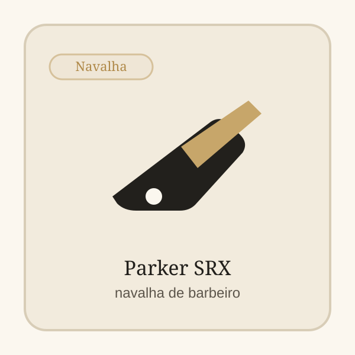

Produto recomendadoPrecisao classica
Parker SRX Straight Razor
Navalha de barbeiro em aco inoxidavel para quem quer mais rigor em linhas, contornos e ritual classico. Faz mais sentido para barbeiros ou para quem ja quer uma ferramenta dedicada de perfilado.
Antes de comprar
- Melhor para: Precisao classica
- Ponto forte: boa leitura de ferramenta profissional
- Vantagem adicional: mais controlo em linhas e contornos

Porque recomendamos este produto
Recomendamos a Parker SRX porque é uma navalha de barbeiro com construção em aço inoxidável e equilíbrio para trabalho preciso — boa escolha para perfilados e acabamentos a sério.
Para quem é
Navalha de barbeiro em aco inoxidavel para quem quer mais rigor em linhas, contornos e ritual classico.
Onde faz sentido
Faz mais sentido para barbeiros ou para quem ja quer uma ferramenta dedicada de perfilado.
Pontos fortes
- boa leitura de ferramenta profissional
- mais controlo em linhas e contornos
- construcao em aco com perfil classico
Limitações
- pede pratica e tecnica
- menos indicada para quem quer rapidez sem curva de aprendizagem
Loja afiliada
Comprar agora na Amazon.es
Confirma disponibilidade e avança para a compra com entrega rápida e pagamento seguro na plataforma.
Transparência: Alguns links nesta página são links de afiliado. O OndeCortar pode receber comissão por compras elegíveis.
Relacionados
Produtos relacionados

Fagaci Professional Hair Clippers
Boa leitura de maquina de corte profissional

Revista OndeCortar
Artigos ligados a esta recomendação
Mais respostas para continuares a pesquisa antes de entrares na loja.

Como reduzir irritação ao fazer a barba
Importa perceber onde o processo está a criar fricção desnecessária.

Trimmer vs shaver: diferenças reais
Dois formatos parecidos na teoria, mas com papéis diferentes na prática.